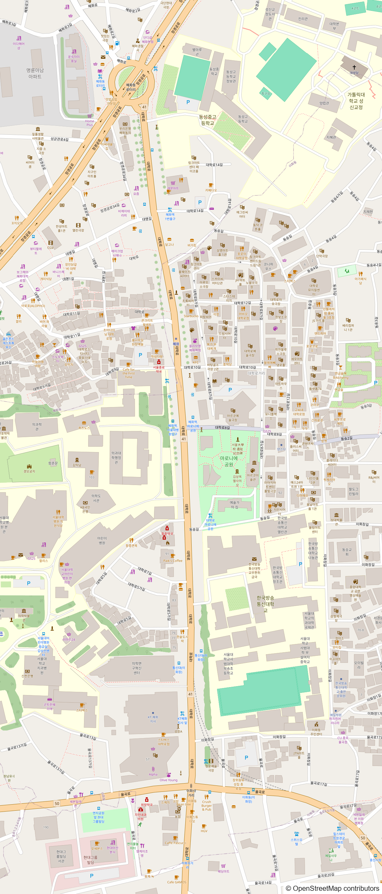
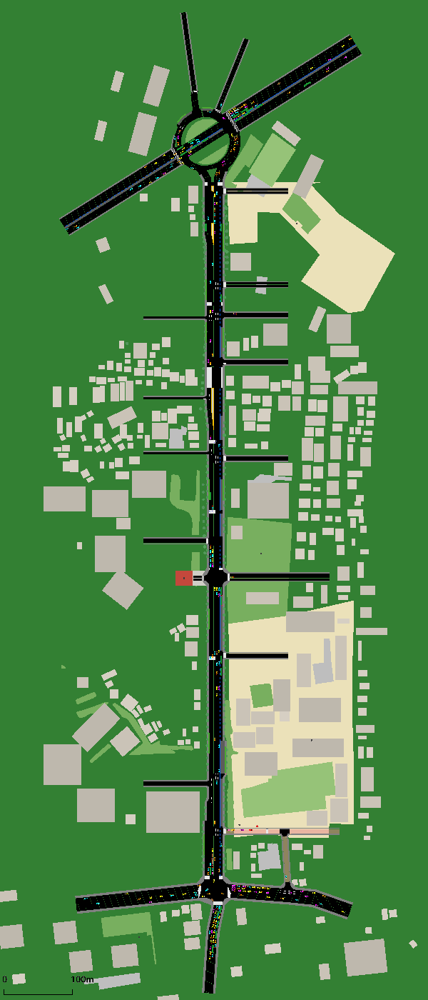
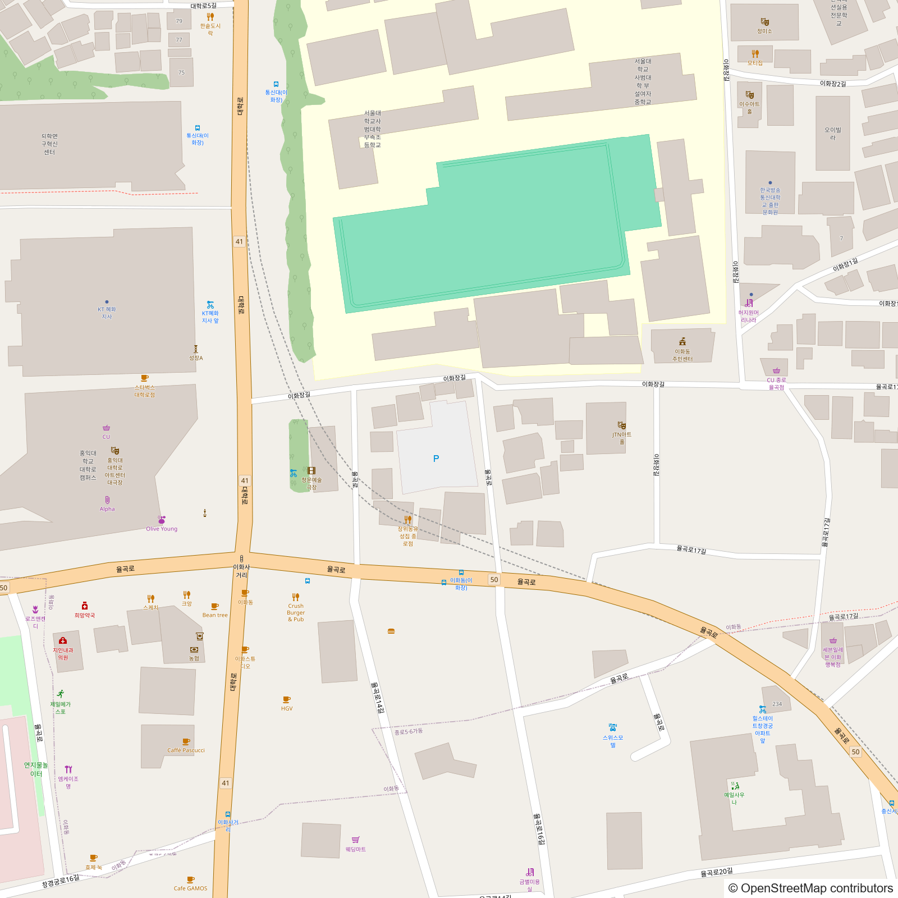
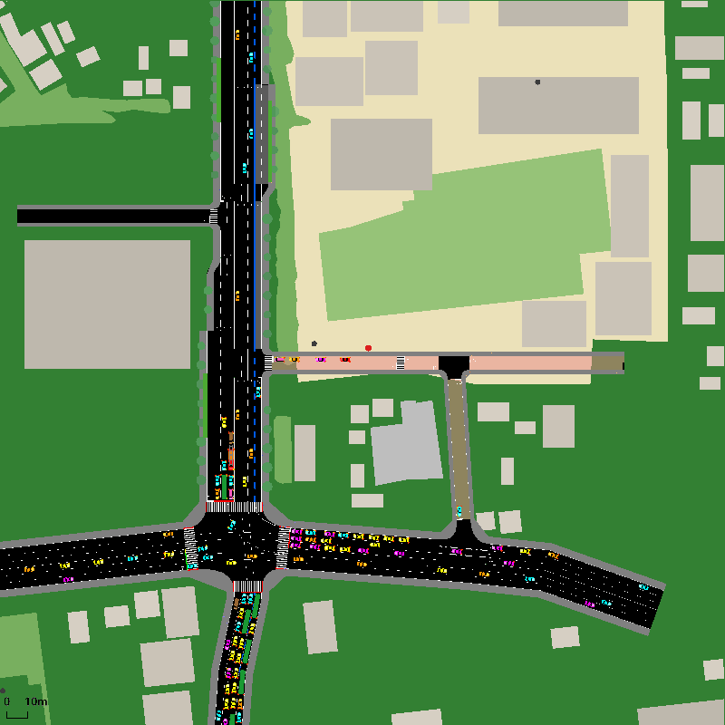
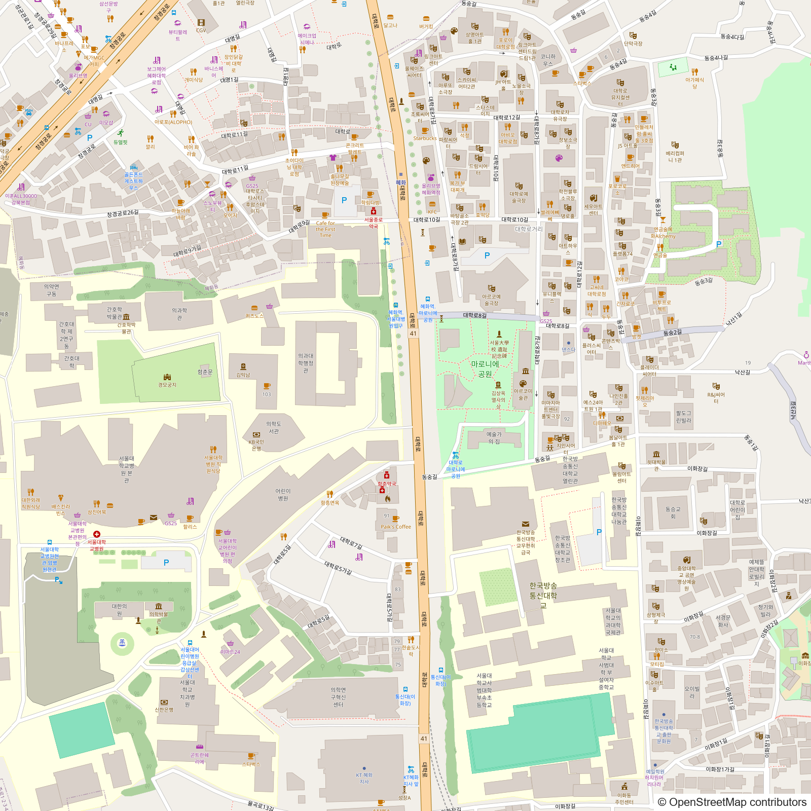
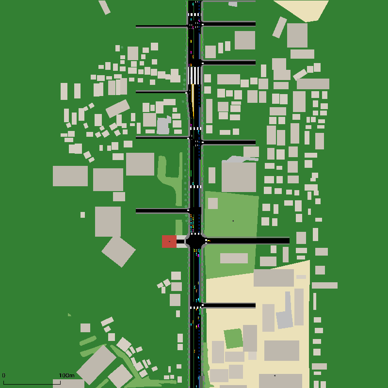
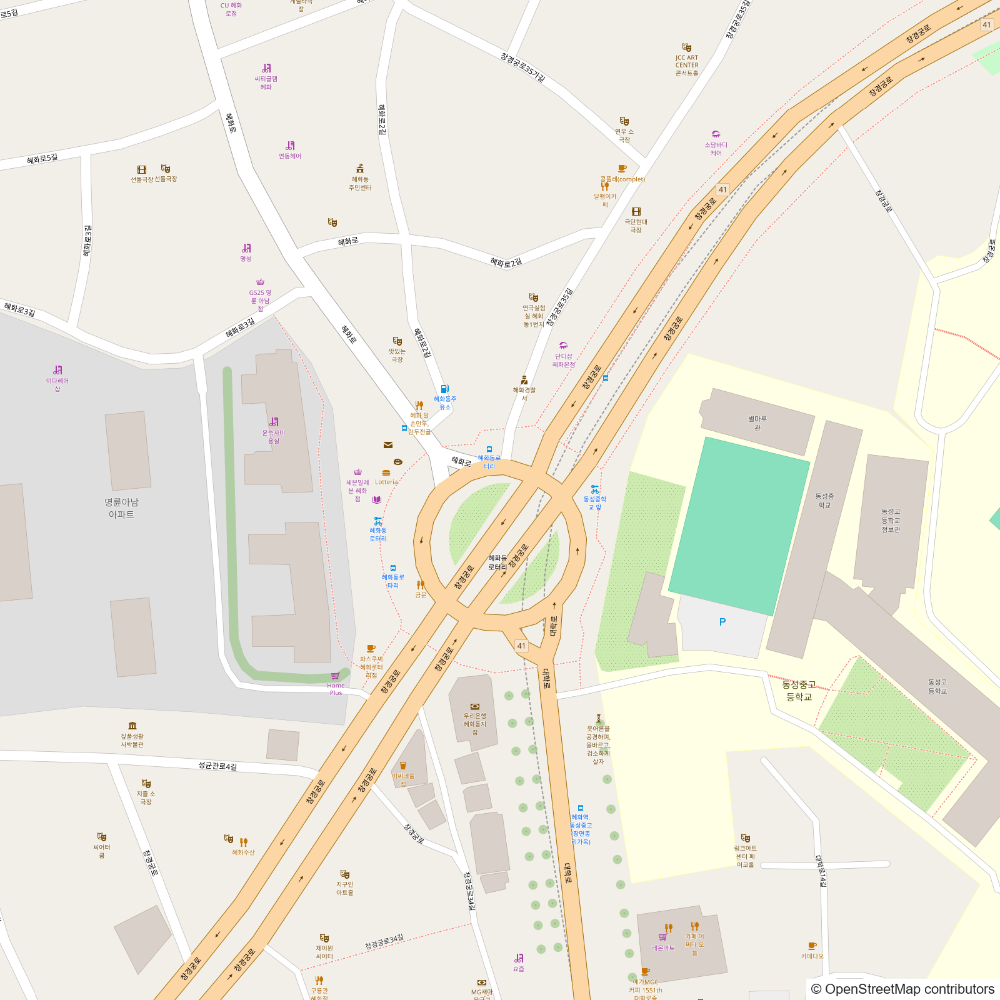
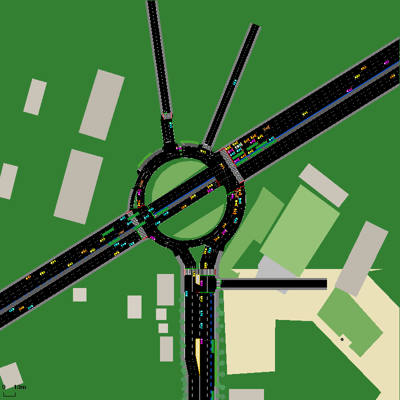
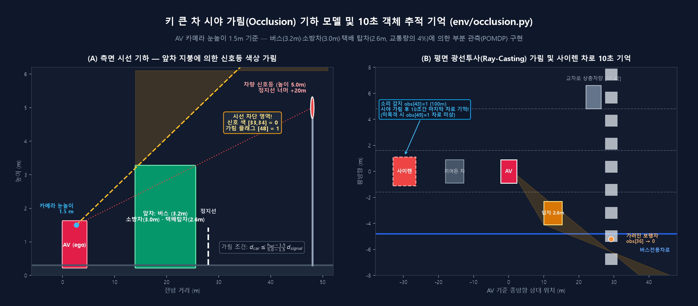

17조 대학로 자율주행 프로젝트
버스에 시야가 가리고 긴급차가 달려오는 SUMO 대학로 · BC → PPO
이화장길 어린이보호구역에서 출발해 1.52 km를 신경망 하나(models/ppo_track.pt)로 달립니다.
models/ppo_track.pt) 출발(이화장길) → 도착(창경궁로 SW) 실제 SUMO 주행 영상models/ppo_track.pt)
초록 대형차 = 노선버스 (3.2m)
갈색 트럭 = 택배 탑차 (2.6m, 4%)
파란 차선 = 가로변 버스전용차로 (실선/점선)
붉은 노면 = 어린이보호구역 (30 km/h)
왼쪽 OpenStreetMap, 오른쪽 sumo-gui. 위쪽이 북쪽이고, 누르면 크게 보입니다.








교통량: 2025 서울시 교통량 조사 (방송대 앞) · 구현: env/daehakro_config.py
화면 가운데 빨간 차가 AV이고, 카메라가 AV를 따라갑니다.

env/occlusion.py전체 재현: bash run_train.sh
SUMO 시범 운전자의 주행을 모읍니다. 일부러 흔든 뒤 바로잡는 복구 장면도 넣었습니다.
관측 50개 → 행동 [가감속, 차로변경]을 지도학습합니다.
가장 잘 달린 BC 모델을 고릅니다.
처음 4만 스텝은 가치망만 예열하고, BC 보조손실로 배운 것을 잊지 않게 합니다.
HybridActorCritic: 관측 50 → Linear 256 → Linear 256 → 가감속(연속) + 차로변경(좌·유지·우)
학습에 쓰지 않은 교통 시드 5개 × 300판 (reports/final_eval_1500.txt)
출처: reports/occlusion_300.txt, reports/siren_*.txt
한 행 = 0.5초 한 스텝. 정책이 본 관측과 가림 없는 참값 상태를 함께 저장.
observation 50칸 구성 (칸에 마우스를 올리면 번호)| 칼럼 | 설명 |
|---|---|
episode, t, sim_time | 에피소드 번호, 에피소드 안의 스텝 번호(0.5초 간격), 시뮬레이션 시각(초) |
observation (50) | 정책이 실제로 본 부분관측. 내 속도, 주변 5개 차로의 앞뒤 차, 신호, 횡단보도, 상충 차량, 사이렌, 가림 여부 등 (-1~1) |
action_raw (2), lane_change | 정책이 낸 [가감속, 차로변경] 값과, 실제로 적용된 차로변경(-1 오른쪽 / 0 유지 / +1 왼쪽) |
reward, terminated, truncated | 그 스텝의 보상, 에피소드가 끝났는지(도착·충돌), 시간이 다 됐는지 |
collided, arrived, collision_with | 충돌 여부, 도착 여부, 부딪힌 상대 |
ego_x, ego_y, ego_speed, ego_lane | AV의 실제 위치(cm)·속도(cm/s)·차로 (가림과 상관없는 참값) |
tls (137) | 대학로 신호기 15개의 연결 137개 신호 색 (초록 1 / 노랑 0 / 빨강 -1) |
veh_* | 도로 위 모든 배경 차량의 위치·속도·차로·차종·정차 여부·방향지시등 |
per_* | AV 50 m 안 보행자의 위치·속도·어린이 여부 |
foe_*, det_* | 교차로 상충 차량(남은 거리, 양보 여부)과 AV가 감지한 차량 |
git clone -b final https://github.com/junyeounyang/17team_FINAL.git 17team_submit cd 17team_submit conda activate sumo-rl python check_setup.py # 최종 PPO 모델 SUMO-GUI 주행 재생 python eval_daehakro.py models/ppo_track.pt --episodes 30 --gui
# 최종 1,500판 평가 (seed 110~150 × 각 300판) 및 가림·사이렌 진단 python final_eval.py models/ppo_track.pt python occ_report.py models/bc_track.pt models/ppo_track.pt --episodes 300 python siren_diag.py oracle expert models/ppo_track.pt --episodes 150 # 처음부터 전체 학습 재현 (시범 2,000판 → BC → PPO 60만 스텝) bash run_train.sh